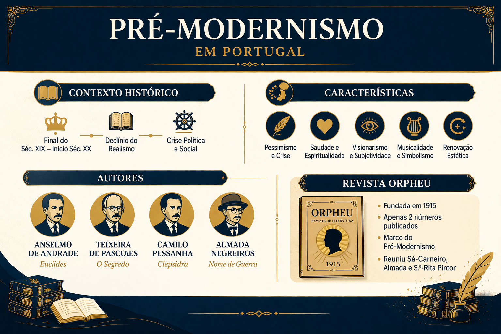

Pré-Modernismo em Portugal: Contexto, Características e Principais Autores
O Pré-Modernismo em Portugal representa um período de transição entre o final do século XIX e o início do século XX, marcando a ruptura com os modelos tradicionais e preparando o caminho para o Modernismo. Essa fase é caracterizada por uma diversidade de estilos e pela busca de renovação estética e temática na literatura portuguesa.

Contexto Histórico do Pré-Modernismo em Portugal
O Pré-Modernismo surge em um momento de profundas transformações sociais, políticas e culturais em Portugal. No final do século XIX, o país vivia uma crise estrutural marcada pelo atraso econômico em relação às demais potências europeias, pela instabilidade política e por um crescente sentimento de decadência nacional.
Um dos acontecimentos mais impactantes foi o Ultimato Inglês de 1890, que obrigou Portugal a abandonar seus planos de expansão territorial na África. Esse episódio gerou forte revolta popular e abalou o orgulho nacional, intensificando o questionamento sobre o papel de Portugal no mundo.
Além disso, o fim da monarquia e a implantação da República, em 1910, trouxeram mudanças políticas significativas, mas também instabilidade. A Primeira República Portuguesa foi marcada por crises econômicas, conflitos internos e dificuldade de consolidação do novo regime.
No campo cultural, havia uma sensação de esgotamento das formas tradicionais de arte e literatura. Os escritores passaram a buscar novas maneiras de expressão, rompendo gradualmente com o passado e refletindo sobre a identidade portuguesa, o atraso social e a modernidade europeia.
Esse cenário favoreceu o surgimento de uma literatura mais crítica, introspectiva e experimental, que preparou o terreno para a revolução estética do Modernismo.
Características do Pré-Modernismo em Portugal
- Transição estética: mistura de elementos do Realismo, Simbolismo e Naturalismo;
- Crítica social e política: questionamento da situação de Portugal e de sua identidade nacional;
- Valorização da identidade nacional: reflexão sobre a cultura, a história e o sentimento de "ser português";
- Subjetividade e introspecção: análise do eu, da existência e da crise do indivíduo moderno;
- Experimentação linguística: inovação na linguagem e na estrutura dos textos;
- Influência de correntes europeias: diálogo com movimentos como o Simbolismo e as vanguardas;
- Ruptura gradual com o passado: abandono progressivo das formas clássicas e tradicionais.
Principais Autores do Pré-Modernismo em Portugal
Fernando Pessoa
Um dos maiores nomes da literatura portuguesa, Fernando Pessoa é considerado uma figura central na transição do Pré-Modernismo para o Modernismo. Sua obra é marcada pela inovação radical, principalmente pela criação dos heterônimos — como Álvaro de Campos, Ricardo Reis e Alberto Caeiro —, cada um com estilo, visão de mundo e linguagem próprios.
Pessoa explorou temas como a fragmentação da identidade, a angústia existencial e a multiplicidade do ser. Sua escrita rompe com padrões tradicionais e inaugura uma nova forma de pensar a literatura, profundamente ligada à modernidade e à crise do sujeito.
Mário de Sá-Carneiro
Mário de Sá-Carneiro foi um dos principais nomes do período e um dos colaboradores da revista Orpheu. Sua obra é marcada por forte subjetividade, introspecção e um sentimento constante de inquietação e desajuste em relação ao mundo.
Seus textos abordam a crise da identidade, o conflito entre realidade e imaginação e o desejo de evasão. Sua linguagem é intensa e muitas vezes experimental, aproximando-se das tendências modernas europeias. Sá-Carneiro teve uma vida breve, mas deixou uma contribuição fundamental para a renovação da literatura portuguesa.
Teixeira de Pascoaes
Teixeira de Pascoaes foi o principal representante do Saudosismo, uma corrente literária que valorizava a nostalgia, a memória e a identidade espiritual de Portugal. Para ele, a "saudade" era um elemento essencial da alma portuguesa.
Suas obras resgatam tradições, mitos e elementos da cultura nacional, propondo uma visão poética e espiritual do país. Embora ligado à tradição, Pascoaes também contribuiu para a renovação literária ao propor uma reflexão profunda sobre o sentimento nacional.
Raul Brandão
Raul Brandão é outro autor importante desse período, conhecido por sua escrita introspectiva e por retratar as camadas mais humildes da sociedade portuguesa. Suas obras apresentam forte carga emocional e crítica social.
Ele abordou temas como a pobreza, a marginalização e o sofrimento humano, utilizando uma linguagem que mistura realidade e subjetividade, antecipando características que seriam exploradas no Modernismo.
O Papel da Revista Orpheu
A publicação da revista Orpheu, em 1915, foi um marco decisivo na transição para o Modernismo em Portugal. Idealizada por jovens escritores como Fernando Pessoa e Mário de Sá-Carneiro, a revista rompeu com os padrões literários tradicionais e introduziu propostas inovadoras e provocadoras.
Embora tenha tido apenas duas edições, Orpheu causou grande impacto e escândalo na sociedade da época, justamente por desafiar normas estéticas e culturais. Ela é considerada o ponto de partida do Modernismo português.
Diferença entre Pré-Modernismo e Modernismo
Enquanto o Pré-Modernismo apresenta uma fase de transição, marcada pela convivência entre tradição e inovação, o Modernismo promove uma ruptura mais radical com o passado. No Pré-Modernismo, ainda há influência de estilos anteriores, enquanto o Modernismo propõe liberdade estética, experimentalismo e novas formas de linguagem.
Além disso, o Pré-Modernismo prepara o terreno intelectual e artístico para as transformações que serão plenamente realizadas pelos modernistas.
Importância do Pré-Modernismo em Portugal
O Pré-Modernismo foi fundamental para preparar o terreno para o Modernismo. Ele possibilitou a renovação da literatura portuguesa, incentivando a experimentação, a liberdade criativa e a reflexão crítica sobre a realidade nacional.
Esse período também foi responsável por revelar autores que se tornariam centrais na literatura do século XX, além de promover a abertura para novas influências europeias e novas formas de expressão artística.
Sem o Pré-Modernismo, a ruptura modernista não teria ocorrido de forma tão intensa e significativa.
Conclusão
O Pré-Modernismo em Portugal foi um momento essencial de transformação na literatura. Ao unir tradição e inovação, ele abriu caminho para o Modernismo e marcou profundamente a história cultural portuguesa.
Mais do que um período de transição, o Pré-Modernismo representa um momento de questionamento, renovação e construção de novas possibilidades estéticas e intelectuais.
Explore Outros Conteúdos
Continue seus estudos acessando outras seções do site Mestre Kira: